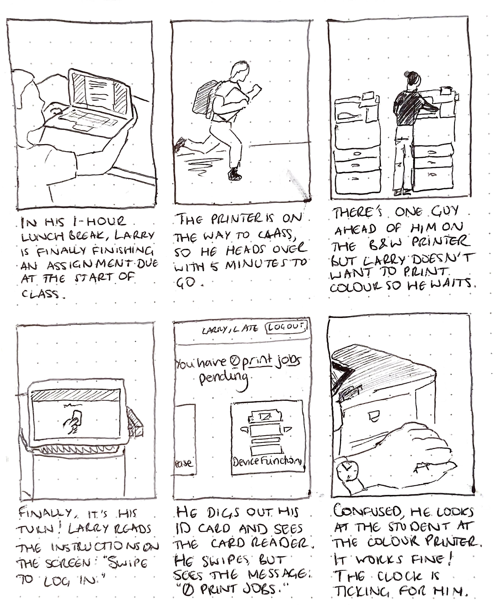

this study was about learning how real people use real interfaces. i looked at the printers in my uni's campus centre and adapted real users' answers into personas to study UX design flows.
part 1: the interface
part 2: the interaction
part 3: the personas
part 4: the storyboards
intro
part 1: the interface
part 2: the interaction
part 3: the personas
part 4: the storyboards

part 1: the interface back to top
first i inspected the interface myself and sketched out its interactive parts.
Printer touchscreen and swipe interface
most students use the touchscreen and card swiper attached to the printer.
the screen presents a streamlined process, which makes sense as
there can be a lot of traffic through the area between classes. some "obvious" questions aren't
answered: what should I swipe? where? students learn the answers pretty quickly, so the interface doesn't try to
teach them.
there are some peripheral options like "Check Status", but the most popular option is front and centre: swipe to
log in, then view your printer queue.
Close-up of card reader interface
the card reader is simple: engraved symbols show an up/down motion, and
an
image of a card shows the magnetic strip pointing toward the middle slot. i thought the symbol might
indicate the correct way to swipe my card, but actually both ways worked.
the position of this element provides context to the screen's interface, answering the question of where to swipe.
this is also a pretty common setup across campus (like at the mailroom nearby), so more context prepares users for
this interaction.
part 2: the interaction back to top
for this part, i sat in the lobby while people walked up to use the printers. i made some quick notes and sketches, and asked a few students some questions for my project.

there were some common points of confusion/friction:
users tended to be pressed for time and focused on efficiency when using the interface. it was generally
straightforward but they found some irritating points they had to adapt to. because of the repetitive interactions
around campus, users habitualise quickly.
some users had a very smooth experience, swiping without looking at the
instructions and collecting their prints.
others were more hesitant: not sure about which printer to
use, reading the screen, swiping, and then looking over the buttons on the touchscreen. some stood at the printer
with their laptops, not sure how to send the print job in the middle
of the interaction.
i asked some usrs about their experience:
- why are you using this interface? they want to: print my class readings/print my essay. mostly only a few pages. always printing their whole queue (they didn't have any documents queued up they were saving for later).
- when do you normally use these printers? they go: just before the class where the assignment is due/whenever i'm in the area/in the afternoon when there's no queue.
- is there anything you had to get used to when you used this for the first time? they had to adjust to: the QR codes on the printers/which printers i can use if i want to print colour vs B&W/how to access my queue.
- is there anything you wish you could do with this interface? users want to: check my printer balance/preview and edit print jobs/access printing instructions/rest my laptop by the printer to check the job.
- does anything confuse you about this interface right now? they were confused: when the touchscreen exits the printing app and they can't see the login screen/by all the buttons after they log in/by the visual hierarchy on the screen.
- is this interface better or worse than any other printers you've used? Why? users said: i like my home printer because i can plug in my laptop/i don't like signing in to things/queueing up for the printer is frustrating because others don't know what they're doing.
part 3: the personas back to top
I used the observations from previous parts to construct 2 personas. I'm mapping out their basic characteristics with something called an empathy map, which sets out how the persona would/what they would think, feel, say or do while using the printer interface.

Late
Larry
Thinks
"why does it say there's nothing in the queue I just sent it to print"
"I can't be late to class again"
"why does it work like this this is so stupid"
"ugh the queue for the black and white printer is so long!"
Feels
impatient about getting to class
frustrated
stressed about other homework
embarrassed that he's taking too long for the people in the queue behind him
Says
"sorry one sec I just need to put my laptop down"
"do you know why it's not showing up?"
"my bad, you can go ahead"
Does
tries to balance his laptop on his hand while swiping his card and almost drops it all
realises he had to send the document online and ends up leaving the line to resend it
is late to class
Late Larry is taking 5 classes and they're all on Monday-Wednesday-Friday. He just finished his homework for a class starting in 2 minutes and his professor wants a physical copy on her desk.
Late Larry is affected by the ambiguity between colour and B&W printers, because if he knew that he could print
B&W on colour printers and not get charged he'd likely switch over. The lack of surfaces to put his laptop on is
also a problem here, as well as the inaccessibility of printing instructions and the unclear/non-obvious QR code
for the Printing Guide.
He combines some of the issues that commonly affect first-time users, who struggle to guess what exactly the
interface wants from them and suffers from the brevity-clarity balance that it chooses.
Tedious
Tiffany
Thinks
"this is taking aaaages"
"wait how many printing credits do I have left maybe I can print more?"
"oh it didn't go through. I guess I should do less?"
"ugh the eboard group chat is going crazy what now"
Feels
bored
zoning out while the pages print
exasperated by the back and forth from the website to the printer
Says
"hi-- yeah I'm printing them now. I don't know how many there'll be, enough I think"
"sorry I'm back again haha, they printed wrong the first time..."
Does
quickly prints docs from phone and swipes to "Print All"
counts pages by hand because she forgot how many she sent
keeps sending small batches so she doesn't run out of money and the print cancels
accidentally prints posters double-sided and can't change it on the printer
Tedious Tiffany is in a leadership position for the "Loving Him Was Brown" club on campus. She spends a lot of time arranging events and there's a big listening party coming up, so she needs to print a lot of posters to put up around campus.
Tiffany has issues with the lack of extra information and customisability options on the printer, as she is unable
to change her printing settings to fit her unique situation (printing posters) or check up on her printing money
balance from the interface.
Tedious Tiffany represents the users who have non-standard needs from the printer interface and end up having to
jump through lots of extra hoops to get something like a batch print done.
part 4: the storyboards back to top
Finally, I created a storyboard to reflect the interaction of my persona Late Larry with the printer interface.

This storyboard helped me to flesh out the persona I had created and envision how the design problems with my
chosen interface can affect people's real lives.
Overall, this project was a useful exercise for thinking about design in context. Thank you for reading!